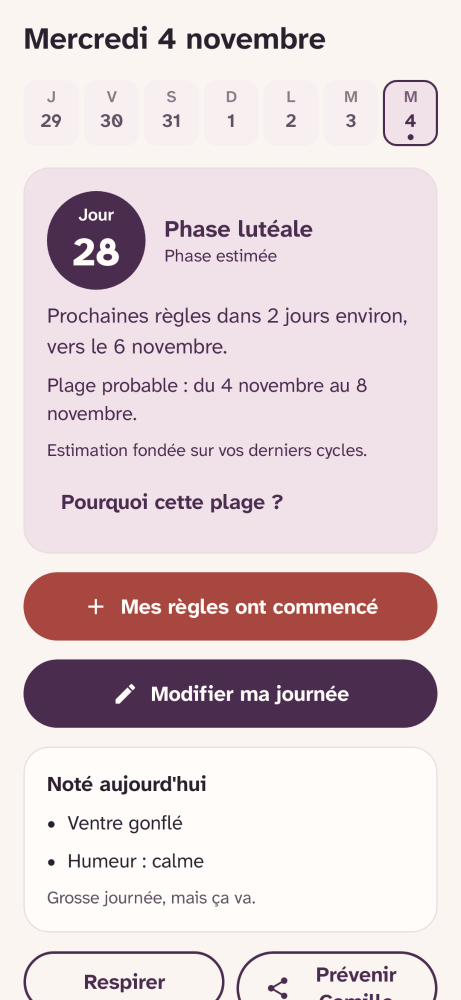
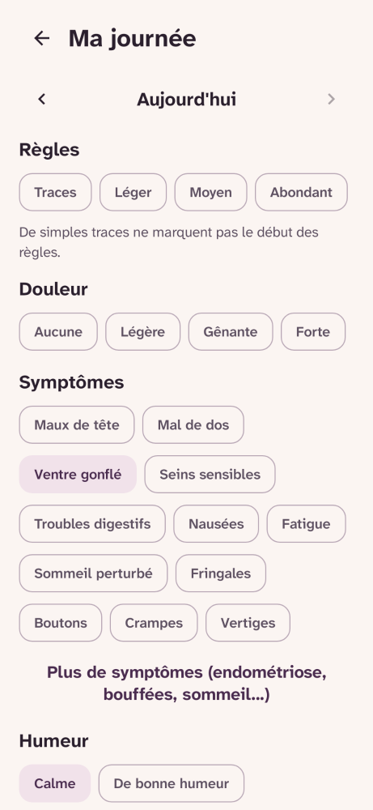
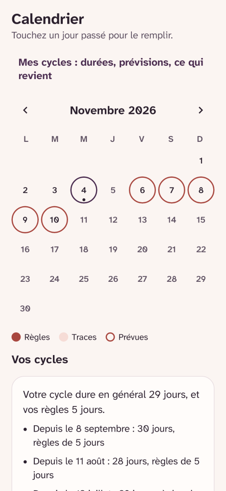
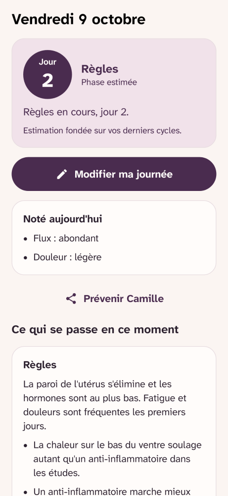
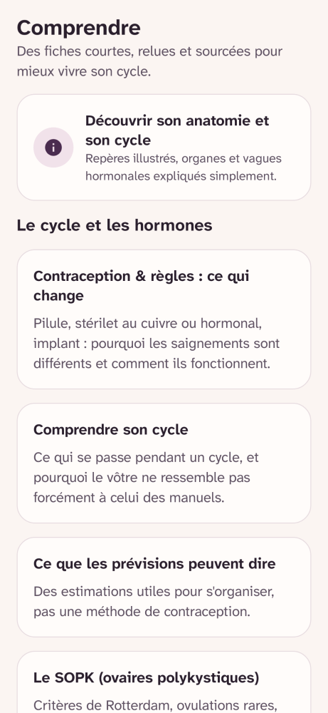
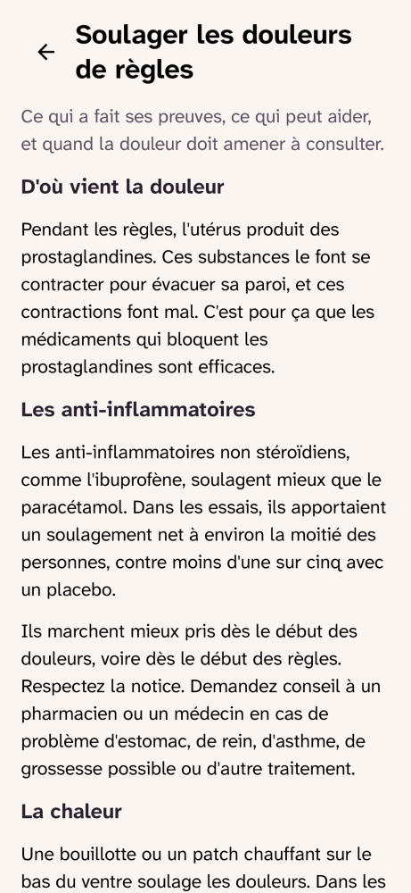
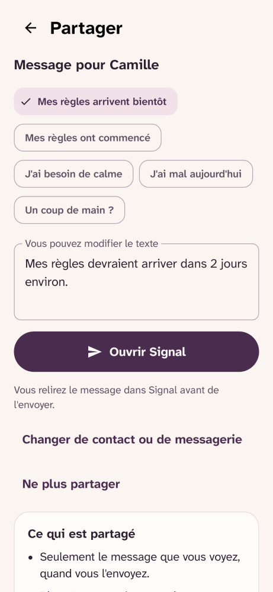
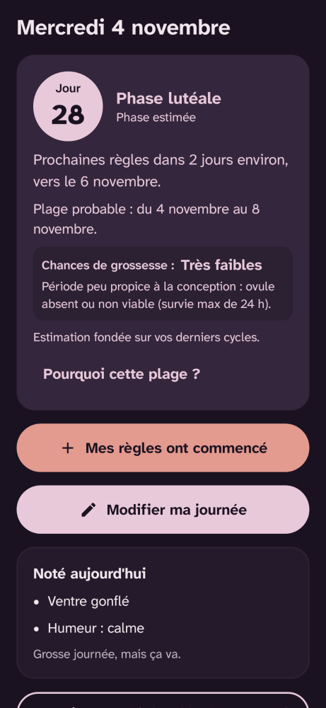

Votre cycle, rien qu'à vous.
Lunaison suit vos règles, vos symptômes et votre humeur, vous explique ce qui se passe à chaque phase et estime l'arrivée des prochaines règles. Tout reste sur votre téléphone : l'appli n'a même pas accès à Internet.
- Gratuit
- Libre (GPL-3.0)
- Sans compte
- Sans publicité ni traceur
- Sans accès à Internet
Aperçu
À quoi ressemble l'appli

L'accueil : où vous en êtes, et quand arrivent les prochaines règles. 
Noter sa journée : flux, douleur, symptômes, humeurs. 
Le calendrier : chaque jour se complète d'un appui, même après coup. 
Pendant les règles : des conseils adaptés à la phase. 
Des fiches courtes, chacune avec ses études. 
Ce qui soulage vraiment les douleurs, et quand consulter. 
Prévenir son ou sa partenaire, par sa propre messagerie. 
Un thème sombre, plus doux le soir.
Pourquoi
Des données parmi les plus intimes qui soient
Lunaison est née d'un besoin de ma compagne : suivre son cycle plus facilement, et me permettre de l'accompagner au quotidien. Les applications existantes réservent souvent leurs fonctions utiles à un abonnement. Lunaison est gratuite, et le restera.
Les applis de suivi du cycle les plus utilisées stockent tout sur leurs serveurs, et certaines ont déjà partagé ces informations avec des services de publicité ou d'analyse. Les dates de règles, les rapports, une grossesse possible : ce ne sont pas des données comme les autres.
Lunaison part du principe inverse : ce que vous notez ne quitte jamais votre téléphone, sauf si vous l'envoyez vous-même. Pas de compte, pas de serveur, pas de publicité. Et parce que le code est public, chacun peut le vérifier.
L'autre parti pris, c'est l'honnêteté : une prévision est toujours une fourchette, chaque conseil de santé renvoie à une étude publiée, et quand les preuves sont faibles, l'appli le dit.
Ce que fait l'appli
Six choses, bien faites
Noter en quelques secondes
Flux, douleur, symptômes, humeur et une note si vous voulez. Tout est facultatif, et un jour oublié se remplit plus tard depuis le calendrier.
Des prévisions honnêtes
Une plage de dates probable, calculée sur vos six derniers cycles, qui se resserre à mesure que vous en notez.
Comprendre chaque phase
Ce qui se passe dans le corps, ce qui peut aider, et ce qui revient chez vous à ce moment du cycle d'après vos notes.
Des fiches sourcées
Douleurs, alimentation, syndrome prémenstruel, protections, quand consulter : chaque fiche cite ses études.
Savoir quand en parler
Douleurs fortes répétées, règles très longues ou abondantes, cycles hors des repères : l'appli le signale, sans jamais poser de diagnostic.
Prévenir son ou sa partenaire
Un message prêt à envoyer par SMS, WhatsApp ou Signal. C'est vous qui appuyez sur Envoyer. Réservé aux 18 ans et plus.
Vous cherchez…
Aller directement à l'essentiel
Comment sont calculées les prévisions ?
Les étapes du calcul, les schémas et les seuils des signaux.
Ce qui soulage vraiment les règles douloureuses
Les études derrière chaque conseil, avec leur niveau de preuve.
Est-ce une contraception ? Où vont mes données ?
Les réponses courtes aux questions les plus fréquentes.
Installer
Pour Android 8 et plus
Lunaison est en phase de test. Elle arrivera sur Google Play après les tests ; en attendant, l'APK signé est disponible sur GitHub.
La version GitHub et la future version Google Play ne sont pas signées par la même clé : pour passer de l'une à l'autre, désinstallez d'abord la première (en exportant vos données si besoin, depuis les réglages).